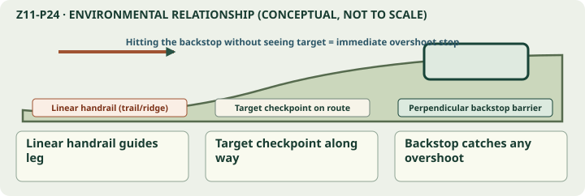

Z11-P24 · Navigation, weather and rescue · New manuscript
Use linear handrails, backstops and catching features along a route
Frame every navigation leg with unmistakable landscape boundaries so you cannot overshoot or drift silently off-course.
When it applies · Planning trail, cross-country or low-visibility travel legs in varied terrain.
Equipment · Oriented topographic map and route notes marking boundaries for each leg.

Actions
- Select a handrail—a continuous linear feature running alongside your intended direction (trail, stream edge, ridge crest, lakeshore, powerline or road)—to follow smoothly without staring constantly at a compass.[N03, N02, ED]
- Select a backstop (catching feature)—a clear unmistakable barrier crossing perpendicular BEYOND your target (river, highway, major trail junction, steep bluff)—that immediately tells you if you walked too far.[N03, N02, ED]
- Check terrain hazards on both handrails and backstops: never use a frozen lake surface, active railroad track or flash-flood canyon floor as a walking handrail.[N10, E12, E04]
Failure recognition · Walking off-trail toward a tiny unmarked pond with no highway, river or ridge backstop behind it to catch an overshoot.[N03, T06]
Verify · For each planned leg, name your travel handrail (if present), target checkpoint and unmistakable backstop feature behind it.[N03, ED]
Stop or change course · The instant you hit your backstop feature without seeing your target, STOP immediately—you have overshot and must relocate calmly before moving.[N03, T06, N09]
Evidence and editorial notes
- E04 · NWS · Flood Safety: Key Points for Camping and Hiking (agency PDF)
- Section: Before and during camping; know your surroundings · Conditions: Stream valleys and runoff channels subject to flash flooding
Support: Choose higher ground away from water channels. Rain far upstream can drive rapid flooding.
Limitations: Dry streambeds and gentle swales can flood rapidly without local rainfall. · Conflicting evidence: None; aligns with NWS-FLOOD.
Editorial note: Core hydrological exclusion rule for shelter placement. · Specialist reviewer: Emergency management and hydrology
Primary source · checked 2026-11-24 - E12 · Minnesota DNR · Ice Safety (current web edition)
- Section: Ice Safety > basic precautions · Conditions: Minnesota ice edges and travel routes
Support: No ice is universally safe. Strength can differ over short distances; appearance or tracks alone cannot establish a safe crossing.
Limitations: Currents, springs, snow insulation, and freeze-thaw cycles weaken ice invisibly. · Conflicting evidence: None; mandates shore-bound detour for foundational walking parties.
Editorial note: Maintains strict separation from specialized B013 ice chapters. · Specialist reviewer: Ice safety and search and rescue
Primary source · checked 2026-11-24 - N02 · USGS · Topographic Map Symbols (agency PDF)
- Section: Topographic Map Symbols > Contours, Water, Vegetation and Boundaries · Conditions: Interpreting standard USGS 1:24,000 and US Topo map sheets
Support: Contour spacing indicates slope steepness, index contours give elevation values, blue features mark water/wetlands and standard symbols distinguish roads, trails, cliffs and marshes.
Limitations: Small terrain hazards (boulders, undercut banks, fallen timber, thin ice) fall below map contour interval resolution. · Conflicting evidence: None; anchors terrain and contour interpretation cards.
Editorial note: Explains contour reading alongside map-resolution limitations. · Specialist reviewer: Cartography and search and rescue
Primary source · checked 2026-11-24 - N03 · USGS · What is a Topographic Map (current web edition)
- Section: What is a Topographic Map > Contours and Relief · Conditions: Matching three-dimensional terrain shapes to two-dimensional contour lines
Support: Closed contour rings denote peaks or depressions (hachured), V-patterns point uphill in valleys/drainages and wide spacing marks gentle slopes while tight spacing marks cliffs or steep grades.
Limitations: Dense forest canopy or snow drifts can obscure subtle terrain features shown on the map. · Conflicting evidence: None; core topographic terrain-association evidence.
Editorial note: Supports ridge, valley, saddle and handrail terrain-interpretation cards. · Specialist reviewer: Navigation and cartography
Primary source · checked 2026-11-24 - N09 · NPS · Outdoor Emergency Plan (current web edition)
- Section: Outdoor Emergency Plan > Signaling, Lost-Person Protocol and SAR Handoff · Conditions: Lost or overdue party awaiting search and rescue
Support: Stay put once lost unless immediate danger requires moving to nearby safer ground; preserve footprints/clues, make visible contrast signals in open clearings, answer whistle/voice calls and stay ready for responder instructions.
Limitations: Unplanned wandering expands search radius exponentially and delays rescue contact. · Conflicting evidence: None; reinforces B014-P16, P17 and P20.
Editorial note: Core evidence for lost-person psychology, signaling and SAR coordination cards. · Specialist reviewer: Search and rescue
Primary source · checked 2026-11-24 - N10 · NWS · Turn Around Don't Drown (current web edition)
- Section: Turn Around Don't Drown > Flooded Crossings and Terrain Detours · Conditions: Navigating around flooded streams, washes and submerged roads
Support: Water barriers and flooded crossings conceal washed-out banks, swift undercurrents and deep holes; detour along verified dry high-ground routes or hold in a safe elevated spot.
Limitations: Applies equally to foot and vehicle navigation. · Conflicting evidence: Aligns with B014-P12 and T07.
Editorial note: Connects navigation rerouting to flood and water-barrier boundaries. · Specialist reviewer: Search and rescue and emergency management
Primary source · checked 2026-11-24 - T06 · NPS · Outdoor Emergency Plan (current web edition)
- Section: If you get lost or hurt; call for help · Conditions: Outdoor US emergency
Support: Communicate location, last known point, situation and needs. Stay put when unable to establish a safe route unless immediate danger requires movement.
Limitations: Cell signal is unreliable in backcountry terrain; pre-trip plans bridge communication gaps. · Conflicting evidence: None; core lost-person decision rule.
Editorial note: Foundation for stay/signal/move and dispatch handoff cards. · Specialist reviewer: Search and rescue
Primary source · checked 2026-11-24
Source lineage · USGS topo symbols and NPS navigation; new manuscript · Classification · New manuscript.